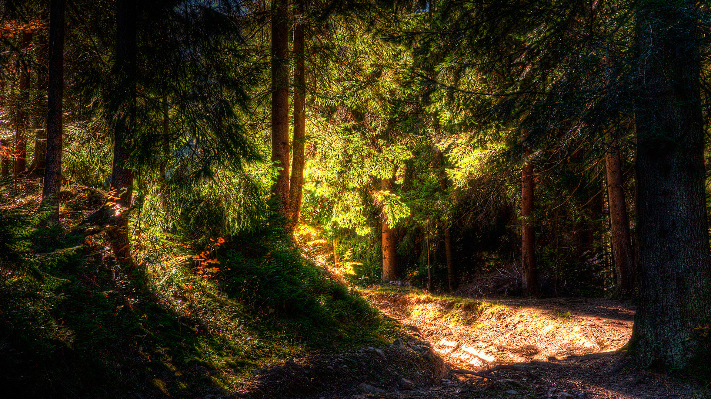

Projeto Traveller
Bem vindo ao projeto Traveller!
Escolher o melhor roteiro para suas viagens nunca foi tão fácil
Nossa missão é facilitar sua experiência de buscar por roteiros de viagens. Aqui estão selecionados os melhores parques urbanos, bares e boates de São Paulo.
